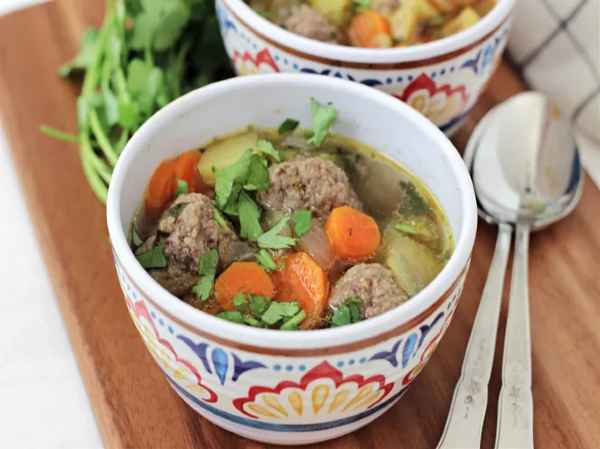

Homemade Albondigas Soup

Description
This albondigas soup reminds me of when I was young, staying home from school. My grandmother would make this for me. It is so good and flavorful. It is great on a cold rainy day or any day you feel like it. You can substitute any of the veggies for ones you like better. My grandmother would also make Mexican rice and scoop some into my bowl to make it even better!
Ingredients
- 1 pound ground beef
- 1 bunch cilantro, finely chopped
- 1 small onion, chopped
- 4 cloves garlic, minced
- 1 pinch garlic salt
- 1 pinch onion powder
- salt and ground black pepper to taste
- cooking spray
- 4 (14.5 ounce) cans chicken broth
- 4 large carrots, cut into 1/2 inch pieces
- 3 stalks celery, cut into 1 inch pieces
- 3 potatoes, cubed
Steps
- Gather the ingredients.
- Place ground beef, 1/2 of the cilantro, 1/2 of the onion, garlic, garlic salt, and onion powder in a bowl. Sprinkle with salt and black pepper; mix gently until combined. Form meat mixture into golf ball-sized meatballs.
- Coat a large skillet with nonstick cooking spray; warm over medium-high heat. Cook meatballs in the hot skillet until browned all over. Transfer meatballs to a plate and set aside. (Meatballs do not need to be fully cooked since they will finish cooking in the soup.)
- ook and stir remaining onion in the same skillet over medium-low heat until translucent, 8 to 10 minutes. Transfer onions to a large pot.
- Pour chicken broth into the pot with onions. Stir in carrots, celery, and potatoes. Bring to a boil over high heat; reduce heat and simmer until potatoes are nearly tender, about 15 minutes.
- Add meatballs and remaining cilantro; simmer for 30 minutes. Season with salt and black pepper.
Home